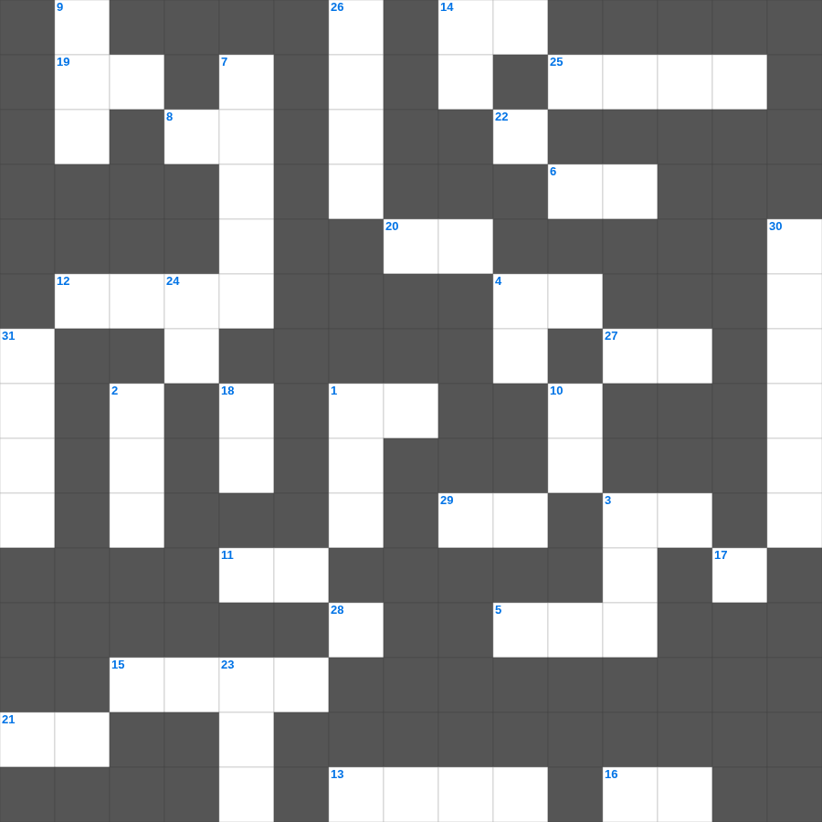

레위기 마스터 100
📌 서비스 정의
십자가로세로는 교회 주보와 주일학교에서 사용할 수 있는 성경 기반 가로세로 퍼즐 서비스입니다. 성경 인물, 사건, 핵심 구절을 바탕으로 제작되었습니다. 온라인 풀이 및 인쇄 기능을 제공합니다.
📖 레위기란?
레위기는 제사와 제물, 제사장의 역할, 정결법과 거룩한 생활에 대한 하나님의 말씀을 담고 있습니다. 이스라엘 백성이 거룩한 민족으로 살아가기 위한 율법이 기록되어 있으며 총 27장입니다.
📚 레위기의 주요 사건·주제
다섯 가지 제사 제도 · 제사장 위임식 · 정결법과 부정한 음식 · 속죄일 규례 · 희년 제도
레위기를 주제로 한 레위기 말씀 퀴즈입니다. 35개의 단어를 맞춰보세요! 가로세로 낱말 퍼즐 형식으로 레위기의 핵심 내용을 재미있게 복습할 수 있습니다.

📝 가로 힌트
1. 요한이서 1장 6절: 계명을 따라 행하는 것
3. 마땅히 행할 길을 이것에게 가르치라 그리하면 늙어도 그것을 떠나지 아니하리라
4. 할렐루야 우리 하나님을 찬양하는 일이 선함이여 찬송하는 일이 아름답고 이것하도다
5. 너희 모든 나라들아 여호와를 찬양하며 너희 모든 이것들아 그를 찬송할지어다
6. 여호와께서 집을 세우지 아니하시면 세우는 자의 이것이 헛되며
8. 성벽 재건 중 대적들이 비웃으며 한 말 '이것이 올라가도 무너지리라'
11. 왕의 진노는 죽음의 사자들과 같아도 지혜로운 사람은 그것을 이것하게 하리라
12. 율법의 말씀을 듣고 백성들이 보인 반응
13. 욥기를 통해 알 수 있는 고난의 유익 '하나님을 이것함'
14. 정직한 자의 성실은 자기를 인도하거니와 이것한 자의 패역은 자기를 망하게 하느니라
15. 귀환 후 일곱째 달에 이스라엘 백성이 모인 곳
16. 백성들이 죄를 자복하며 견고한 이것을 세워 인을 침
19. 네게서 나는 것은 석류나무와 각종 아름다운 과수와 고벨화와 이것 초와
20. 여호와는 나의 반석이시요 나의 이것이시요 나를 건지시는 이시요
21. 느헤미야가 성벽을 다 쌓았을 때 성문에 무엇을 달지 못했나
25. 사무엘상의 전체 장수
27. 지혜로운 사람의 책망을 듣는 것이 우매한 자들의 이것을 듣는 것보다 나으니라
29. 아이의 마음에는 미련한 것이 얽혔으나 이것 하는 채찍이 이를 멀리 쫓아내리라
📝 세로 힌트
1. 홍수 때 비가 내린 기간
2. 다윗의 아들, 지혜의 왕
3. 청년 남녀와 노인과 이것들아 여호와의 이름을 찬양할지어다
4. 여호와를 바라는 너희들아 강하고 이것을 담대히 하라
7. 느헤미야가 백성들에게 격려하며 한 말 '우리 하나님이 우리를 위하여 이것하시리라'
9. 예루살렘 성벽 파수를 맡은 느헤미야의 아우
10. 여호와께서 너의 출입을 지금부터 이것까지 지키시리로다
14. 너는 이웃과 더불어 다투거든 이것만 분별하고 남의 은밀한 일은 누설하지 말라
17. 부자는 가난한 자를 주관하고 빚진 자는 채주의 이것이 되느니라
18. 자식은 여호와의 기업이요 태의 열매는 그의 이것이로다
22. 우리가 너를 위하여 금 사슬에 이것을 박아 만들리라
23. 지혜에 관한 지식이 더 유익함은 지혜가 그 지혜 있는 자를 이것 하기 때문이니라
24. 꿈에 나타나신 하나님께 솔로몬이 구한 것
26. 다윗의 마지막 말 '이스라엘의 이것 노래하는 자'
28. 사무엘하는 사무엘의 죽음 이후의 역사를 기록함 (O/X)
30. 왕 앞에서 슬픈 기색을 보인 느헤미야의 심정
31. 에스라 10장에 나오는 죄를 지은 자들의 명단 분류 중 하나
🧩 이 퍼즐에서 배우는 내용
이 퍼즐은 레위기 마스터 100의 핵심 단어와 개념을 자연스럽게 복습할 수 있도록 구성되었습니다. 주일학교 수업이나 개인 성경공부에서 학습 내용을 점검하는 용도로 바로 활용할 수 있습니다.
🧑🏫 교회 교육 자료 활용
이 퍼즐은 주일학교 교재 추천 자료로 활용할 수 있고, 주일학교 주보에 넣기 좋은 분량으로 구성되어 있습니다. 수업용 주일학교 교안에 활동지로 붙이거나, 예배 후 복습용 주일학교 공과교재로 바로 사용할 수 있습니다.
🏷️ 키워드
레위기 말씀 퀴즈, 레위기, 십자가로세로, 성경퀴즈, 말씀퀴즈, 가로세로퍼즐, 주일학교 교재 추천, 주일학교 주보, 주일학교 교안, 주일학교 공과교재